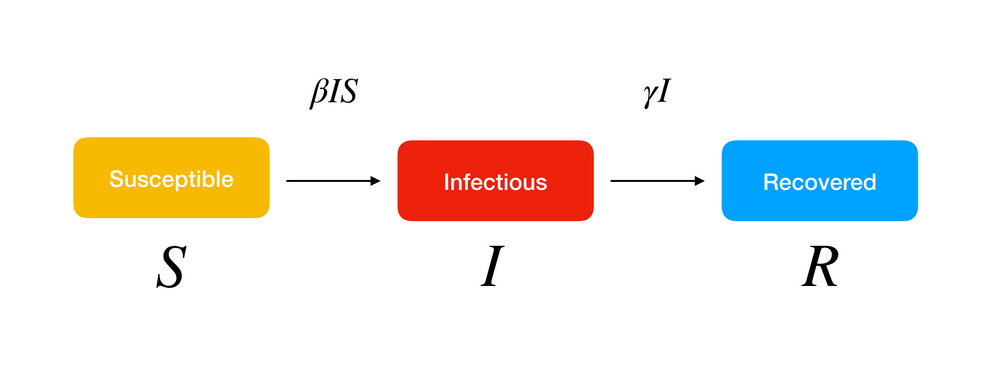

SIR model is a kind of compartmental model describing the dynamics of infectious disease. The model divides the population into compartments. Each compartment is expected to have the same characteristics. SIR represents the three compartments segmented by the model.
Susceptible are the group of people who could potentially catch the disease (vulnerable to exposure with infectious people). They can be patients when the infection happen.
Infectious are group of people who are infected. They can pass the disease to susceptible people and can be recovered in a specific period.
Recovered people get immunity so that they are not susceptible to the same illness anymore.
SIR model is a framework describing how the number of people in each group can change over time.

From assumption 2 the number of susceptible people will decrease. Therefore the rate of change of susceptible will be:
where is the rate of contact between susceptible and infected.
Rate of change of infected with time will be equal to the rate at which the susceptible are getting infected minus the rate at which the people are getting recovered (or died):
At the start of a disease spread the number of people who can potentially catch infection is the total population.
From the firs equation it is clear that
Putting this in second equation we get:
So the disease will spread or not depends on the sign of the right hand side of the above inequality. Since I and S are positive quantities, therefore a disease will spread if
where is the contact ratio, this is the fraction of population which comes into contact with infected individual during the period in which they are infected.
If we multiply both sides of the inequality by we get
is the basic reproductive number which represents number of secondary infections in the population caused by one initial primary infection. value for common flu is somewhere between 1.5 and 2 whereas for COVID-19 it is estimated to about 3-4. The exact number are obvously still being determined because this is an ongoing pandemic which we have never seen before. This number is telling that an infected person is spreading the infection to 3-4 susceptible people and that is why this disease is spreading so rapidly all around the world.
Now if we divide equation 3 by 1 we get
Now upon integrating we get
Now we can get the maximum number of infected. From equation
The value of so that is .So, now putting this value of in previous equation we get:
This means that the maximum infected people depends on the contact ratio. So it is a very very bad news if a disease have a large value of like COVID-19 which says that the maximum number of people who can catch the disease at one point of time is actually most of the population.
The standard SIR model is modified slightly to get an estimate of deaths separately from the recovered cases. Following are the new equations (here D stands for number of deaths).
We can modify the equations to make the coefficients subject the formulas.
The historical data of can be fetched from api.covid19india.org. We can assume to be the entire poputlation of India initially. Now we can calculate the values of the coefficients at every time step. However this is not enough. The values are very noisy. To smooth the values we pass it through a low pass filter. This gives good results. The current values of the coefficients are (as of ):